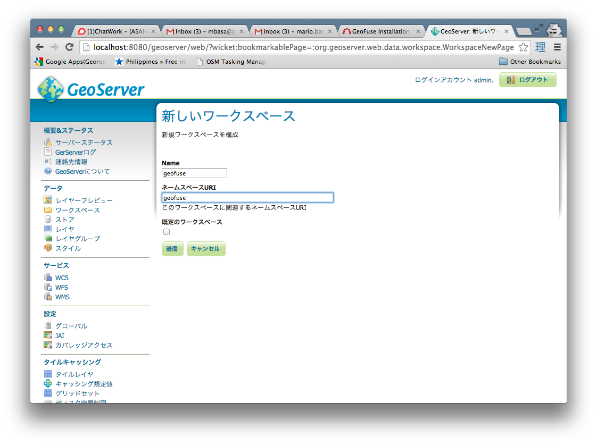
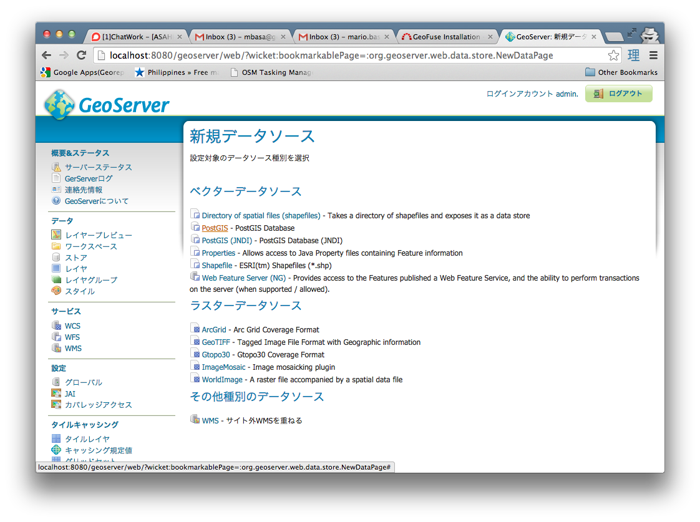
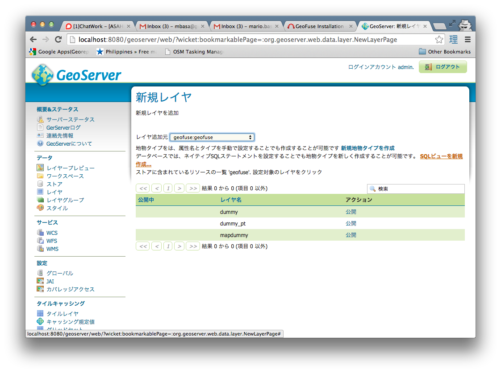
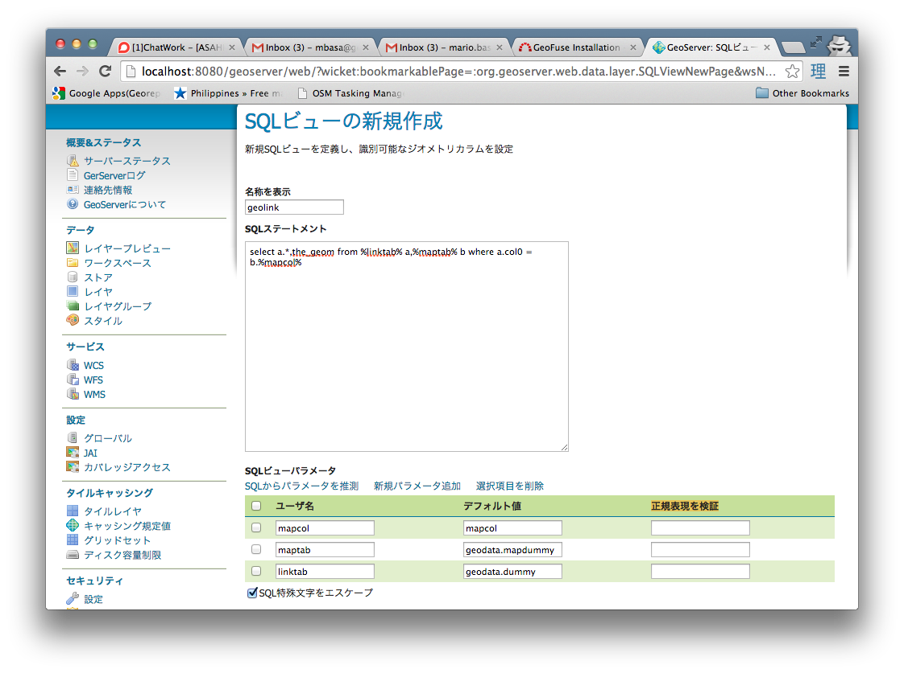
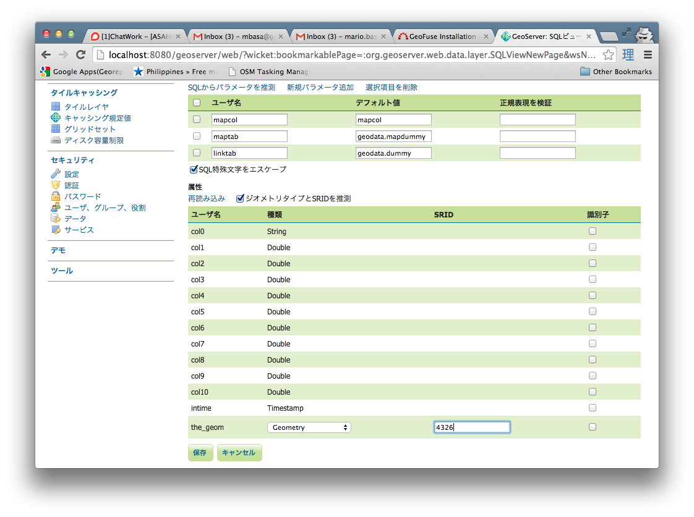
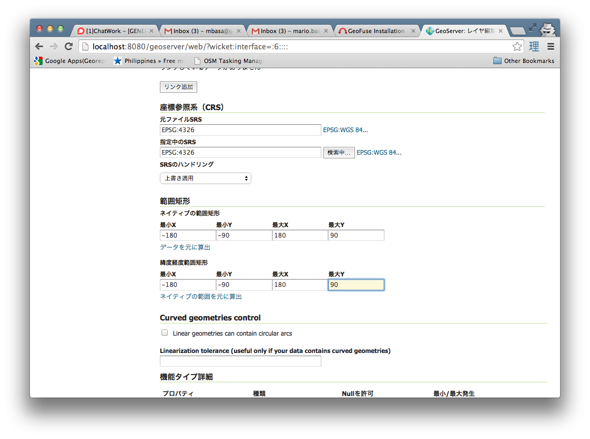
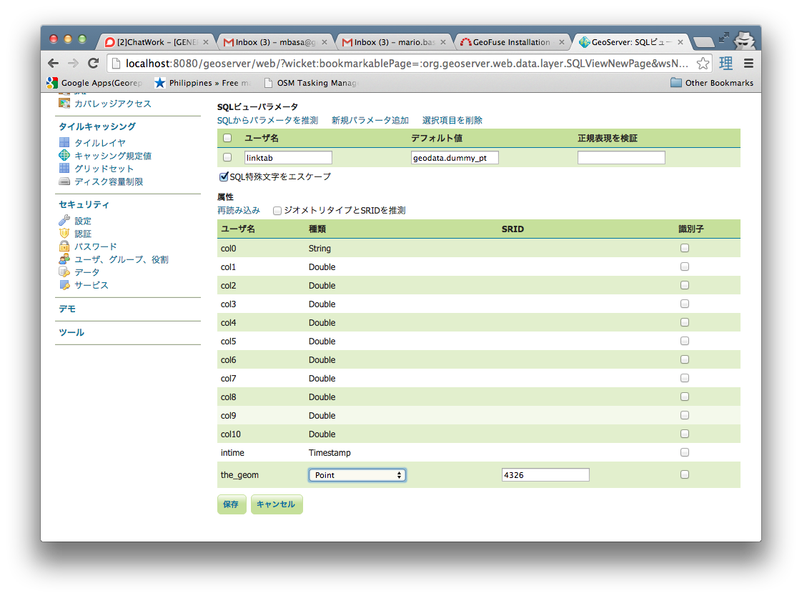

These are the procedures that needs to be done to install GeoFuse.
- Install a recent version of the JDK (minimum: JDK 7)
- Install a recent version of PostgreSQL/PostGIS
- Install a recent version of Apache Tomcat
- Install a recent version of Geoserver
- Copy the geoserver.war and geofuse.war files into the Tomcat webapps directory
- Start Tomcat. This will deploy both geoserver and geofuse web applications.
- Create a geofuse PostgreSQL Database.
createdb -U postgres geofuse
- Add the POSTGIS and the POSTGIS_TOPOLOGY extensions into the geofuse Database.
geofuse=# create extention postgis;
geofuse=# create extention postgis_topology;
- Create the schemas and tables the Geofuse application will use
geofuse=# \i <TOMCAT_DIR>/webapps/geofuse/WEB-INF/classes/sql/createtabs.sql
- install the deltemp PL/pgSQL function that deletes upload CSV tables and cleans up the metadata tables.
geofuse=
- Now in Geoserver, create a Workspace named geofuse


- Name the new Store as geofuse and set the database parameter to the geofuse database created. Set the schema parameter to geodata.

- Create a new SQL View Layer

- Set the layer name as geolink and the SQL Statement as
select a.*,the_geom from %linktab% a,%maptab% b where a.col0 = b.%mapcol%
- Set the View Parameters to the values below and erase the values of the Validation regular expression (正規表現を検証)
linktab = geodata.dummy
maptab = geodata.mapdummy
mapcol = mapcol

- Press the Refresh button to update the Columns list. Change the SRID of the the_geom column to 4326 and press the Save Button.

- After Pressing the Save button, set the Bounding Box Parameters to -180 -90 180 90 in the main layer creation page and then Save.

- Create another SQL View Layer using the procedure set above. Set the layer name as geolink_pt and the SQL Statement as below
select * from %linktab%
- Set the View Parameters to the values below and erase the values of the Validation regular expression (正規表現を検証)
linktab = geodata.dummy_pt
- Press the Refresh button to update the Columns list. Change the Geometry Type to Point and the SRID of the the_geom column to 4326 and press the Save Button.

- After Pressing the Save button, set the Bounding Box Parameters to -180 -90 180 90 in the main layer creation page and then Save.